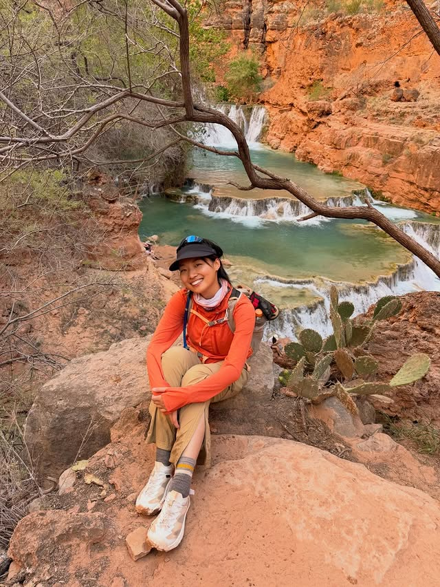
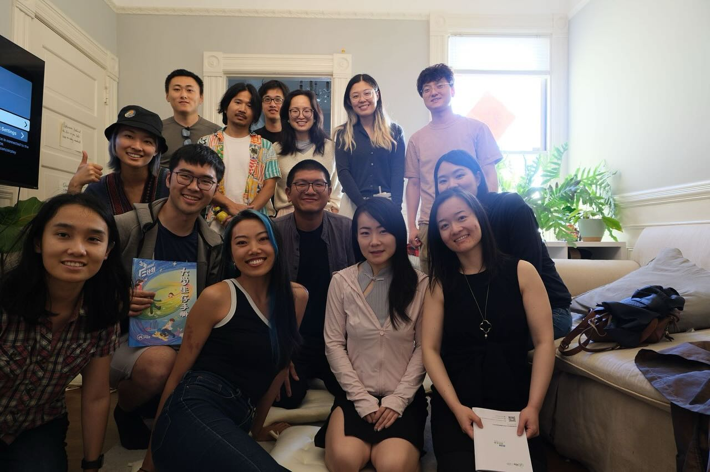

Havasupai, Arizona“When I am not I, I am wind usually. Sorting yesterdays by the color of turquoise and the legend of red rocks.”
01 — personal fieldwork
I’m interested in intelligence, intimacy, and the places that change us.
Currently
thinking about what intelligence owes to intimacy.
Mathematics, machine learning, privacy, and the structures beneath the systems we trust.
Solo journeys, mountain weather, and small proofs that the world is still astonishing.
Books, long dinners, chosen family, and questions worth staying with.
A question garden / no. 07
02 — traces of a moving life

Havasupai, Arizona“When I am not I, I am wind usually. Sorting yesterdays by the color of turquoise and the legend of red rocks.”

Noe Valley, San Francisco“First week is done — spreading love and support for each other.”
03 — a room for conversation
“Time changes things. We pay the price for everything that can turn: food, shelter, souls.”
李翊云 / adapted from the text shared by Fuma


35mm frames from the road / Patagonia
not a feed, an afterimage